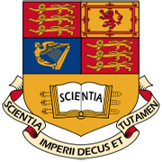

📚 Biography
I am a student of MSc Applied Machine Learning at Imperial College London
My research interest focuses on machine vision
🏫 Education
2023.9 - 2024.9, MSc Appied Machine Learning, Imperial College London

2022.9 - 2023.5, Electrical and Computer Engineering, National University of Singapore Research Institute (NUSRI)
2019.9 - 2023.6, B.E., Qiushi Honors College, Tianjin University (111 selected out of 4804 students)
💻 Internships
2023.5 - 2023.8, The BRAVE Group, National Key Laboratory of Pattern Recognition, Institute of Automation, Chinese Academy of Sciences (CASIA)
Focus on Multi-camera surround depth estimation
1).Designed a supervised pre-trained method for multi-camera surround depth estimation by utilizing sparse depth maps generated from LiDAR, and achieved preferable depth estimation result on nuscenes dataset.
2).Captured and processed the multi-camera surround view dataset of CASIA, and achieved preliminary depth estimation result by applying the method proposed in the paper.
3).Designed an end-to-end two-stage heterogeneous depth estimation method by combining fisheye and pinhole cameras.
Specifics (Visualization Outcomes & Technical Documentation)
2021.7 - 2021.8, HUAWEI - Shanghai Kunpeng Innovation Center
Developed a gesture-controlled mini-car that can perform well in night-vision environment
📜 Publications
"End-to-end Multimodal Sign Language Recognition System (upcoming)", -- Ruiqi Shen, Zixuan Zhang, Peiru Wu, Chengkuo Lee
An end-to-end system integrating visual information and dynamic sensing is developed for recognition of American Sign Language(ASL) gestures
Work at NUSRI (2022.9→2023.5), Supervisor: Prof. Chengkuo Lee;
Source Code Detailed introduction
The paper is currently being authored.
🏆 Honors & Certificates & Experiences
05/2023, Outstanding student of ECE-CLASS 2022 at NUS Research Institute
06/2022, Member of the Machine Vision Committee of the China Society of Images and Graphics
06/2022, Merit Student Scholarship of Tianjin University
08/2022, UNITAR Global Competency Training Programme
02/2021, University of Oxford: Best Teamwork award in the winter program of 'Global Challenges for the Future of Humanity'
IELTS: 8.0; GRE: 324+3.5; CET-6: 640